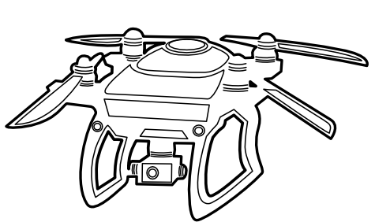

OverviewFederal Aviation AdministrationFAA Reauthorization Act of 2018Federal Register and e-CFRNational Park ServiceState of California resourcesCalifornia Department of Transportation California bills and acts Parks, counties, and ordinances Third-party resources State of New Jersey resourcesThird-party resourcesLibrary of CongressUnofficial resources
Drones have become not only a popular piece of recreational technology, but an important device for both commercial and public use. From the perspective of the U.S. government, drones fall under the category of Unmanned Aerial Systems (UAS) and the term "drone" and "UAS" are generally interchangeable in published government documentation.
This page provides resources for researching drone laws and UAS guidelines. Specifically, they provide links to content from the Federal Aviation Administration and state laws for California and New Jersey.
The Federal Aviation Administration, a component of the U.S. Bureau of Transportation, is the primary agency that releases government information regarding drones and Unmanned Aerial Systems (UAS).
As with most government websites, the FAA website provides a search bar for browsing internal content. It also provides an A-Z Index page for finding specific information. The most relevant content for drone owners is found on the UAS page, which covers everything from drone registration, public safety rules, and links to resources such as mobile apps, DroneZone, and the FAA Safety Team website.
The following table lists resources from the FAA, as well as official partner sites that provide information regarding drone regulations.
| Title | URL/Permalink | Description |
|---|---|---|
| Unmanned aircraft systems (UAS) | https://www.faa.gov/uas/ | FAA's primary page for commercial and recreational drone use. It provides dedicated pages for recreational and commercial drone flyers, as well as a description of the processes involved when registering drones. |
| Fact Sheet – Small Unmanned Aircraft Systems (UAS) Regulations (Part 107) | https://www.faa.gov/news/fact_sheets/news_story.cfm?newsId=22615 | FAA fact sheet for drone owners. |
| FAA safety team | https://www.faasafety.gov/ | FAA's FAASTeam website dealing with drone regulations and air safety. It also provides training and resources for flying in U.S. airspace. The FAASTeam has a huge library of documents, presentations, and research papers regarding UAS and drone use. |
| FAADroneZone | https://faadronezone.faa.gov/#/ | FAA website dedicated to registration of drones. |
The FAA Reauthorization Act of 2018 is the primary legislation dealing with UAS integration into U.S. airspace. Although the signing of the bill superficially doesn't affect consumer drone users, it set about further regulation and clarity towards using unmanned aircraft. The Act's text is available through Congress.gov and can also be viewed through the Office of the Law Revision Counsel United States Code website by using the Popular Name Tool.
| Title | URL/Permalink | Description |
|---|---|---|
| H.R.302 - FAA Reauthorization Act of 2018 | https://www.congress.gov/bill/115th-congress/house-bill/302/text?q=%7B%22search%22%3A%5B%22PL+115-254%22%5D%7D&r=1 | Full text of the FAA Reauthorization Act of 2018 . Describes the provisions for UAS registrations, the creation of the Drone Advisory Committee, integration of UAS into the national airspace, and allowances for public drone services. |
| Implementation of the FAA Reauthorization Act of 2018 | https://www.transportation.gov/testimony/implementation-faa-reauthorization-act-2018 | Statement discussing the FAA Reauthorization Act of 2018 published by the U.S. Department of Transportation. Includes a dedicated section to Unmanned Aircraft Systems (UAS). |
| FAA Reauthorization | https://www.faa.gov/about/reauthorization/ | FAA Reauthorization page on the FAA.gov website. |
Due to COVID-19, the Federal Register published an FAA rule describing the role of UAS and UAS pilots during the pandemic. The e-CFR provides the full regulation regarding this ruling in Title 14: Aeronautics and Space, Part 107 - Small unmanned aircraft systems.
| Title | URL/Permalink | Description |
|---|---|---|
| Limited Extension of Relief for Certain Persons and Operations During the Coronavirus Disease 2019 (COVID-19) Public Health Emergency | https://www.federalregister.gov/documents/2020/06/29/2020-13960/limited-extension-of-relief-for-certain-persons-and-operations-during-the-coronavirus-disease-2019 | Documentation for UAS pilots and their role during the COVID-19 public health emergency. |
| Part 107 - Small unmanned aircraft systems | https://www.ecfr.gov/cgi-bin/text-idx?SID=dc908fb739912b0e6dcb7d7d88cfe6a7&mc=true&node=pt14.2.107&rgn=div5 | Contents of Special Federal Aviation Regulation No. 118-2—Relief for Certain Persons During the National Emergency Concerning the Novel Coronavirus Disease (COVID-19) Public Health Emergency |
Parks and wide areas are a specific concern when it comes to drones. The National Park Service provides some guidance regarding flying UASs in public parks. In most cases however, users will have to verify with local government or with park authorities regarding drone use in specific locations.
| Title | URL/Permalink | Description |
|---|---|---|
| Unmanned Aircraft in the National Parks | https://www.nps.gov/articles/unmanned-aircraft-in-the-national-parks.htm | National Park Service FAQs regarding drones in National Parks. Cites U.S. code 36 C.F.R. § 2.2, 36 C.F.R. § 2.34, and 36 C.F.R. § 2.12(a)(3), which describe the protection of wildlife and undeveloped areas, and public alarm caused by noise. |
| Unmanned Aircraft Systems (UAS or drones) | https://www.nifc.gov/drones/ | National Interagency Fire Center page briefly discussing drones and wildfires. |
The California Department of Transportation website provides some resources regarding commercial drone use as well as contact information for inquiries. California's Department of Transportation website doesn't discuss drone use in detail, though it does point to the FAA and provides information regarding using drones for films. Researchers can instead focus on local ordinances or California bills and acts that mention drones.
| Title | URL/Permalink | Description |
|---|---|---|
| Unmanned Aircraft Systems (Drones) | https://dot.ca.gov/programs/aeronautics/unmanned-aircraft-systems | Provides links to resources related to UAS use on the state highway and filming projects. |
The California Legislative Information website provides bills and codes specific to the state of CA, including those related to drone use. Researchers can use the keyword "drones" or "UAS" in the Quick Bill Search and Quick Code Search tools to find content related to drones. For a bill search, selecting the session year provides considerably more results.
The following table lists published active bills and proposed acts related to flying drones in the state.
| Title | URL/Permalink | Description |
|---|---|---|
| AB-1190 Unmanned aircraft: state and local regulation: limitations | http://leginfo.legislature.ca.gov:80/faces/billNavClient.xhtml?bill_id=201920200AB1190& | This bill would prohibit a state or local agency from adopting any law or regulation that bans the operation of an unmanned aircraft system. The bill would also authorize a local agency to adopt regulations to enforce FAA regulations regarding the operation of unmanned aircraft systems and would authorize local agencies to regulate the operation of unmanned aircraft and unmanned aircraft systems within their jurisdictions. The bill would also authorize a local agency to require an unmanned aircraft operator to provide proof of federal, state, or local registration to licensing or enforcement officials. |
| AB-2787 Unmanned aircraft systems: delivery services | http://leginfo.legislature.ca.gov:80/faces/billNavClient.xhtml?bill_id=201920200AB2787& | This bill would require the operator of an unmanned aircraft system involved in an accident resulting in injury to an individual or damage to property to immediately land the unmanned aircraft at the nearest location that will not jeopardize the safety of others. The bill would make a person who knowingly fails to comply with these provisions guilty of an infraction punishable by a fine of not more than $250. |
| AB-2598 Law enforcement agencies: Federal Bureau of Investigation: Joint Terrorism Task Force. | http://leginfo.legislature.ca.gov:80/faces/billNavClient.xhtml?bill_id=201920200AB2598& | Defines “Surveillance equipment and technology” as any electronic device or system with the capacity to monitor and collect audio, visual, locational, thermal, or similar information on any individual or group. This includes drones with cameras or monitoring capabilities. |
| AB-1680 Crimes: emergency personnel. | https://leginfo.legislature.ca.gov/faces/billTextClient.xhtml?bill_id=201520160AB1680 | 402 (a) (1)-(2) explicitly defines that an owner of unmanned aerial vehicles/remote piloted craft, or drone can be guilty of the misdemeanor of being at an emergency scene. This is also explicitly described in PART 1. OF CRIMES AND PUNISHMENTS, TITLE 10. OF CRIMES AGAINST THE PUBLIC HEALTH AND SAFETY [369a - 402c] |
| SB-807 Unmanned aircraft systems | https://leginfo.legislature.ca.gov/faces/billTextClient.xhtml?bill_id=201520160AB1680 | The public entity is responsibility for damages to UAS if the damage occurred during the course of emergency services operations. |
| AB-856 Invasion of privacy | https://leginfo.legislature.ca.gov/faces/billNavClient.xhtml?bill_id=201520160SB807 | Defines privacy, including the collection of data. Does not mention drones explicitly. |
Due to the size of the state, researchers will have to visit dedicated websites for specific ordinances and rules for flying drones in parks and counties. These are drone laws that apply only to certain regions, cities, or counties within the state of California, and were created by various authorities within the state.
The following table lists a sampling of restrictions for specific parks and locales in counties all over California.
| Title | URL/Permalink | Description |
|---|---|---|
| 12.16.040 - Motorized or radio-controlled models and 12.16.045 - Aircraft | https://library.municode.com/ca/rancho_palos_verdes/codes/code_of_ordinances?nodeId=TIT12STSIPUPL_CH12.16STPAREFA_12.16.040MORANTMO | Rancho Palos Verdes Municipal Codes of Ordinances dealing with aircraft and radio-controlled systems. |
| MRCA Park Ordinance | https://mrca.ca.gov/parks/park-ordinance/ | Mountains Recreation and Conservation Authority usage guidelines for Santa Monica Mountains. § 3.17. Flight, Aircrafts and Drones of the MRCA Park Ordinance states that no UAV or drones are allowed in the park unless the operator has a permit from the Execute Officer. |
| San Diego Drone Operator Guide | https://www.sandiego.gov/sites/default/files/2019.03.05_drone_operator_guide.pdf | Sandiego.gov's official guide for drone operators. |
The following links are independent and unofficial resources that collate information regarding drone use in California.
| Title | URL/Permalink | Description |
|---|---|---|
| Drone Law | https://www.hoverlaw.com/ | A law blog covering commercial drone use in California. |
| Drone Laws In California: State & City Regulations for UAV Pilots | https://bestdroneforthejob.com/blog/drone-uav-laws-in-california/ | Summary of state and drone regulations in California. |
| California UAS Laws | https://www.911security.com/learn/airspace-security/drone-laws-rules-and-regulations/california | Short list of laws for drone usage in California. |
| California drone laws | https://statedronelaw.com/state/california/ | Provides a restricted airspace map and a list of pending and signed laws for drone use in the different areas of California. |
The New Jersey Legislature website provides a comprehensive system for tracking current and passed bills related to drones and UASs. The Bill Search includes the option to specify the Legislative Session when searching for specific keywords such as "drones" and "UAS". In general, specifying a session returns more results than a general search.
The New Jersey government website, on the other hand, refers to the FAA as the primary source for drone regulations.
| Title | URL/Permalink | Description |
|---|---|---|
| Unmanned Aircraft Systems/Drones | https://www.nj.gov/transportation/freight/aviation/drones.shtm | Provides links to FAA guidelines for drone use. |
| A2469 | https://www.njleg.state.nj.us/2020/Bills/A2500/2469_I1.HTM | Sets forth certain standards to be followed by law enforcement agencies and fire departments when utilizing Drones. Identical Bill Number: S475 |
| A3103 | https://www.njleg.state.nj.us/2020/Bills/A3500/3103_I2.HTM | Requires drones to have geo-fencing technology to restrict flying over 500 feet and within distance from airports and U.S. airspace. |
| A3104 | https://www.njleg.state.nj.us/2020/Bills/A3500/3104_I1.HTM | Requires certain retailers to provide notice of FAA safety guidelines for flying drones to consumers. |
| A3833 | https://www.njleg.state.nj.us/2020/Bills/A4000/3833_I1.HTM | Prohibits the use of drones by law enforcement entities. |
| S475 | https://www.njleg.state.nj.us/2020/Bills/S0500/475_I1.HTM | Sets forth certain standards to be followed by law enforcement agencies and fire departments when utilizing Drones. |
Townships and counties publish their own legislation regarding unmanned aircraft as with the following example for Long Beach, NJ.
| Title | URL/Permalink | Description |
|---|---|---|
| Chapter 57 Drones and Unmanned Aircraft | https://ecode360.com/30512978?fbclid=IwAR0x30KY60w8gSXRkLQ_7F6UhIYViL1s1KkzqgjaWjlnE6ODB679N5x6E5Q | Drone legislation for Long Beach, Ocean County, NJ. |
The following are third-party sources that collate New Jersey laws relevant to drone use in the state.
| Title | URL/Permalink | Description |
|---|---|---|
| New Jersey UAS Laws | https://www.911security.com/learn/airspace-security/drone-laws-rules-and-regulations/new-jersey | Short list of laws for drone usage in New Jersey. |
| New Jersey drone laws | https://statedronelaw.com/state/new-jersey/ | Provides a restricted airspace map and a list of pending and signed laws for drone use in the different areas of New Jersey. |
The Library of Congress provides two useful references for drone regulations in different countries. The content provides a different perspective to drone use and demonstrates how drone regulation is inconsistent and not universal in its application.
| Title | URL/Permalink | Description |
|---|---|---|
| Regulation of Drones | https://www.loc.gov/law/help/regulation-of-drones/index.php | Library of Congress guide to drone regulations overseas. |
| Regulation of Drones: Comparative Analysis | https://www.loc.gov/law/help/regulation-of-drones/comparative.php | Supplementary analysis of drone regulations in different countries. |
The following table lists unofficial resources that can be used as a reference for commercial and home drone owners. Some law firms, for example, track the progress and changes in drone legislation.
| Title | URL/Permalink | Description |
|---|---|---|
| Drone regulations: What you need to know | https://www.pcmag.com/news/drone-regulations-what-you-need-to-know | Layman's guide to home drone use. |
| Drone laws in the United States of America | https://uavcoach.com/drone-laws-in-united-states-of-america/ | Directory of drone laws in the United States |
| US drone laws | https://www.grupooneair.com/us-drone-laws/Overview | Description of the state of drone usage in the US from a training agency. |
| Know Before You Fly | http://knowbeforeyoufly.org/ | Campaign for drone safety by the Association for Unmanned Vehicle Systems International (AUVSI) and the Academy of Model Aeronautics (AMA). |